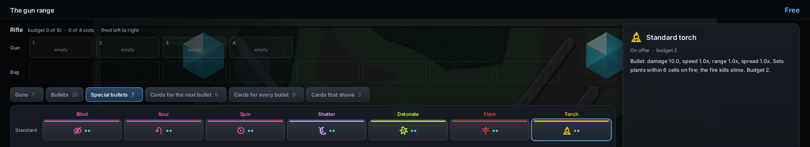

<title>Element Bullets</title>
<meta name="claude:viewport-fit-sides" content="cover">
<link rel="stylesheet" href="https://fonts.googleapis.com/css2?family=Chakra+Petch:wght@600;700&family=IBM+Plex+Sans:wght@400;600&family=IBM+Plex+Mono:wght@400;500&display=swap">
<style>
/* Same system as the Mind, reader and route pages. Accents: the torch's flame yellow-orange, the slime's amber, the heat flag's ember red. */
:root{
  --bg:#eef0ee; --panel:#e0e4e1; --fg:#161a19; --muted:#56605c; --line:#c5cbc7;
  --torch:#a86400; --heat:#b3361f; --crystal:#137f95; --good:#3f7a00;
  --display:"Chakra Petch","Segoe UI",system-ui,sans-serif;
  --body:"IBM Plex Sans","Segoe UI",system-ui,sans-serif;
  --mono:"IBM Plex Mono",ui-monospace,Consolas,monospace;
}
@media (prefers-color-scheme: dark){:root:not([data-theme="light"]){
  --bg:#101413; --panel:#1a201e; --fg:#e8ece9; --muted:#9aa5a0; --line:#2b3330;
  --torch:#ffd23a; --heat:#ff7a5c; --crystal:#5fd0e3; --good:#b6f05a; color-scheme:dark}}
:root[data-theme="dark"]{
  --bg:#101413; --panel:#1a201e; --fg:#e8ece9; --muted:#9aa5a0; --line:#2b3330;
  --torch:#ffd23a; --heat:#ff7a5c; --crystal:#5fd0e3; --good:#b6f05a; color-scheme:dark}
body{background:var(--bg);color:var(--fg);font:16.5px/1.55 var(--body);
  padding-left:max(16px,env(safe-area-inset-left,0px));padding-right:max(16px,env(safe-area-inset-right,0px));padding-block:28px 64px}
main{max-width:1180px;margin:0 auto;display:flex;flex-direction:column;gap:34px}
h1,h2,h3{font-family:var(--display);text-wrap:balance;line-height:1.12;margin:0;letter-spacing:.01em}
h1{font-size:2.5rem;font-weight:700}
h2{font-size:1.5rem;font-weight:700}
h3{font-size:1.1rem;font-weight:700}
p{margin:0;max-width:70ch}
section{display:flex;flex-direction:column;gap:14px}
.eyebrow{font:12px/1 var(--mono);letter-spacing:.1em;text-transform:uppercase;color:var(--muted)}
.lede{color:var(--muted);font-size:1.04rem;max-width:70ch}
ul{margin:0;padding-left:1.2em;display:flex;flex-direction:column;gap:8px;max-width:74ch}
li{min-width:0}
code{font:.86em var(--mono);background:var(--panel);padding:1px 4px;border-radius:3px}
.bar{display:flex;flex-wrap:wrap;gap:10px;align-items:center}
button{font:600 14px var(--body);color:var(--fg);background:var(--panel);border:1px solid var(--line);border-radius:6px;padding:7px 12px;cursor:pointer}
button[aria-pressed="true"]{background:var(--fg);color:var(--bg);border-color:var(--fg)}
button:focus-visible{outline:2px solid var(--crystal);outline-offset:2px}
.hint{font-size:.9rem;color:var(--muted)}
.pair{display:grid;grid-template-columns:repeat(2,1fr);gap:14px}
@media (max-width:760px){.pair{grid-template-columns:1fr}}
figure{margin:0;display:flex;flex-direction:column;gap:6px;min-width:0}
video{width:100%;max-width:100%;aspect-ratio:960/456;border-radius:6px;border:1px solid var(--line);background:#000;display:block}
img.still{width:100%;max-width:100%;border-radius:6px;border:1px solid var(--line);display:block}
.tag{font:500 12px/1 var(--mono);letter-spacing:.08em;text-transform:uppercase;color:var(--muted)}
.torch .tag.on,.torch h2 .k,.torch h3 .k{color:var(--torch)}
.heat .tag.on,.heat h2 .k,.heat h3 .k{color:var(--heat)}
figcaption{font-size:.92rem;color:var(--muted)}
.counts{font:12.5px/1.55 var(--mono);color:var(--fg);background:var(--panel);padding:7px 10px;border-radius:6px;overflow-x:auto;white-space:pre}
.short{background:var(--panel);border-radius:8px;padding:18px 20px;display:flex;flex-direction:column;gap:10px}
.wrap{overflow-x:auto;max-width:100%}
table{border-collapse:collapse;font:13px/1.45 var(--mono);min-width:560px}
th,td{padding:5px 10px;border-bottom:1px solid var(--line);text-align:right;white-space:nowrap}
th:first-child,td:first-child{text-align:left}
thead th{font:600 12px var(--body);color:var(--muted)}
tbody tr:last-child td{border-bottom:none}
td.up{color:var(--good);font-weight:500}
.note{border-left:3px solid var(--torch);padding:4px 0 4px 14px}
.heat .note{border-left-color:var(--heat)}
footer{font-size:.85rem;color:var(--muted)}
</style>
<main>
<header style="display:flex;flex-direction:column;gap:10px">
  <span class="eyebrow">Larder World · guns · step D · 2026-11-17</span>
  <h1>Element bullets: the Torch</h1>
  <p class="lede">The fourth bullet family of the gun-card plan works through the ground the slime stands on: fire, water and plants. The first card is the Torch. Its hit kills nothing; it sets the plants on fire, and the fire does the killing. The game designer's idea of letting the slime sense heat is here too, as a switch that is off, with the one film it asked for.</p>
</header>

<div class="bar">
  <button id="slow" type="button" aria-pressed="false">Slow motion ×½</button>
  <span class="hint">Each clip loops, 10 s of game time from 15.9 s. Planet 1:2 (a meadow), idle hand, the near view at zoom 8. The clips are the same game except for three free torches at 16 s and the heat setting.</span>
</div>

<section class="torch">
  <h2><span class="k">Torch</span>: sets plants within 6 cells on fire</h2>
  <p>Three torches land in the grass beside a thin vein of slime. Each lights every plant within 6 cells at full heat. The fire spreads through the grass, kills the thin slime it reaches, and stops at slime thick enough to be damp. Grass the slime has worn thin never gets hot enough to kill.</p>
  <div class="pair">
    <figure><span class="tag">No torch</span><video src="none.mp4" autoplay muted loop playsinline></video>
      <div class="counts">walkers within 12 cells of the vein
  31 at 16 s · 39 at 18 s · 37 at 22 s · 0 at 26 s
killed by fire  0
slime at 26 s   24,903</div></figure>
    <figure><span class="tag on">Three torches at 16 s</span><video src="heat-0.mp4" autoplay muted loop playsinline></video>
      <div class="counts">walkers within 12 cells of the vein
  31 at 16 s · 22 at 18 s · 34 at 22 s · 0 at 26 s
cells burning within 24 cells
  431 at 17 s · 221 at 22 s · 140 at 26 s
killed by fire  7 by 18 s · 12 by 26 s
slime at 26 s   24,890</div></figure>
  </div>
  <p class="note">Without a torch the vein draws back by 26 s on its own. With the torches it walks into the flames, its damp trail puts them out where it goes, and 12 walkers burn before it draws back the same way.</p>
</section>

<section>
  <h2>In play: paired 10 s windows</h2>
  <p>The readers' planet scenes, planets 1 to 3, with guarding or squad-mode hands at 25 and 40 s. Each plays one game to that time, then every squad loads a deck and fights for 10 s: plain bullets, torch bullets, or blast bullets (cost 3, against the torch's 2).</p>
  <div class="wrap"><table>
    <thead><tr><th>Planet</th><th>Windows</th><th>Kills: plain</th><th>torch</th><th>blast</th><th>Torch more than plain</th></tr></thead>
    <tbody>
      <tr><td>1, meadow</td><td>6</td><td>230</td><td class="up">350</td><td>258</td><td>6 of 6</td></tr>
      <tr><td>2, barrens</td><td>2</td><td>117</td><td>123</td><td>119</td><td>2 of 2</td></tr>
      <tr><td>3, fen</td><td>2</td><td>11</td><td>18</td><td>12</td><td>1, and 1 with no kills</td></tr>
      <tr><td>all</td><td>10</td><td>358</td><td class="up">491</td><td>389</td><td>9 of 9 (p 0.004)</td></tr>
    </tbody>
  </table></div>
  <ul>
    <li><b>The torch kills more than plain bullets</b> in all 9 windows that had kills, and leaves less slime at the end in 8 of 9. Against the blast it is ahead in 7 of 9, which is not significant. Only the first result survives correcting for the four comparisons.</li>
    <li><b>The ground decides it.</b> On the meadow it took half again as many as plain bullets. On the barrens' sparse scrub and the fen's wet ground it is a plain bullet with a little fire.</li>
    <li>No soldier was lost in any window. On planets 4 and 5 the squads had not reached the slime by 50 s in these scenes, so the jungle planet, where the torch should be strong, is not measured.</li>
    <li>A note for the balance pass: at cost 2 the torch matches or beats the blast on meadows. Nothing is retuned here.</li>
  </ul>
</section>

<section class="heat">
  <h2><span class="k">Heat in the sensors</span>: a switch, off</h2>
  <p>The game designer asked to try letting the slime read fire as a smell it avoids, so that fire herds it. Each sensor now adds a weight times the fire's heat (<code>fire_weight</code>, 0 is off), on both engines. It reads only the fire the player lights, never the soldiers, so it is not the old rule where the slime fled gunfire. Here is the same game with the weight at 0 and at −20.</p>
  <div class="pair">
    <figure><span class="tag">Torches, weight 0</span><video src="heat-0.mp4" autoplay muted loop playsinline></video>
      <div class="counts">walkers within 12 cells of the vein
  22 at 18 s · 34 at 22 s · 0 at 26 s
cells burning within 24 cells
  431 at 17 s · 221 at 22 s · 140 at 26 s
killed by fire  7 by 18 s · 12 by 20 s · 12 by 26 s
slime at 26 s   24,890</div></figure>
    <figure><span class="tag on">Torches, weight −20</span><video src="heat-20.mp4" autoplay muted loop playsinline></video>
      <div class="counts">walkers within 12 cells of the vein
  24 at 18 s · 24 at 22 s · 35 at 26 s
cells burning within 24 cells
  439 at 17 s · 362 at 22 s · 242 at 26 s
killed by fire  8 by 18 s · 14 by 20 s · 17 by 26 s
slime at 26 s   24,885</div></figure>
  </div>
  <figure><span class="tag on">Torches, weight −5</span><video src="heat-5.mp4" autoplay muted loop playsinline style="max-width:580px"></video>
    <div class="counts" style="max-width:580px">walkers within 12 cells of the vein
  23 at 18 s · 28 at 22 s · 48 at 26 s
cells burning within 24 cells
  435 at 17 s · 420 at 22 s · 297 at 26 s
killed by fire  10 by 18 s · 21 by 20 s · 25 by 26 s
slime at 26 s   24,877</div></figure>
  <p class="note">With the weight the slime stops at the fire's edge and rings it instead of walking in. That has a cost the idea did not expect: its damp trail no longer puts the fire out, so the fire burns longer and wider, and the vein stays beside it instead of drawing back. More of it burns, 17 and 25 against 12. On this one film it does not keep the slime away; it holds the slime by the fire. The switch stays off for the designer to decide. A real herding test would put food beyond a line of fire and count how many cross.</p>
</section>

<section class="torch">
  <h2>In the game</h2>
  <p>The Torch costs 2 of the gun's budget and is sold from planet 2. It sits on the armory's Special bullets tab with the Mind bullets, the readers and the Flare.</p>
  <figure>
    <figcaption>The armory at 1920×1080. The Torch's icon is a flame rising out of grass; its bullet is a saturated flame yellow, apart from the plain shot's pale gold and the blast's orange.</figcaption></figure>
</section>

<section class="short">
  <h2>Not settled</h2>
  <ul>
    <li><b>The torch on the jungle planet</b>, where it should be strongest, has no window yet.</li>
    <li><b>Heat in the sensors</b> rests on one film of one scene. It is off.</li>
    <li><b>Frame cost.</b> A torch adds one light to the fire-lighting pass a blast already runs, so nothing each step. The heat switch costs nothing while off; on, it is one more read per sensor and has not been timed on the GTX 1070.</li>
    <li><b>Next in step D:</b> Tinder, a card that lays dry fuel along the bullet's flight so a torch can run a fire along it. Douse (water) waits, because the picture's wet ground is only refreshed when walls and crystals change. Then force; cut last.</li>
  </ul>
</section>

<footer>Source, clips and counts: <code>Reports/gun-element-2026-11-17/</code> in the repo. Clips by <code>raw/film.sh</code> and <code>raw/make_clips.py</code> (counts in <code>raw/counts.json</code>), windows by <code>raw/windows.sh</code> (tables in <code>raw/windows.txt</code> and <code>raw/windows-45.txt</code>).</footer>
</main>
<script>
(function(){
  var b=document.getElementById('slow');
  function set(on){
    b.setAttribute('aria-pressed',on?'true':'false');
    document.querySelectorAll('video').forEach(function(v){v.playbackRate=on?0.5:1;});
  }
  b.addEventListener('click',function(){set(b.getAttribute('aria-pressed')!=='true');});
})();
</script>
